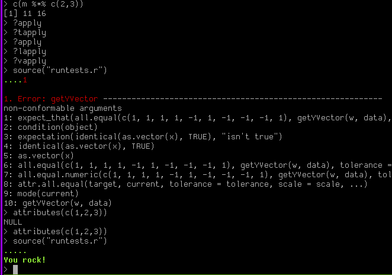

I was writing some tests using the testthat package for R, and got this when I ran the test file:

which is pretty good motivation for me to continue writing those tests =)
It’d be pretty good if test frameworks do the above once in a while. It adds color to something I’d consider rather tedious but necessary.